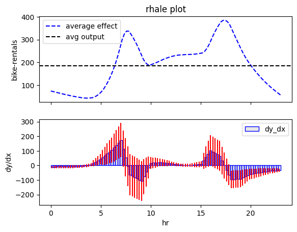

Regional Feature Effect
Why do we care about regional effect plots?
Because they are one of the simplest ways to regionally interpret a black-box model.
In the previous tutorial, we explained the effect of feature \(\mathtt{hour}\) on the daily \(\mathtt{bike-rentals}\), using global feature effect plots. The analysis, however, showed that there is high heterogeneity; there are many instances that behave differently from the average pattern.
The heterogeneity is the fidelity of the explanation
Recap on heterogeneity
Because Global Effect methods average the instance-level effects, they may obscure that many instances behave differently from the average pattern. Heterogeneity analysis helps us to identify these instances.
Below, we show the global effect plot for the \(\mathtt{hour}\) feature on the daily \(\mathtt{bike-rentals}\):


When Global Effect is a weak explanation?
In cases where the global effect plot shows high heterogeneity, it is useful to analyze the regional effect. Why is this the case? Because when many instances behave differently from the average pattern, it means that the effect of feature \(x_s\) on the output \(y\), depends on the values of other features \(x_{\setminus s}\). In these cases, the average effect of feature \(x_s\) on the output \(y\) is a weak explanation.
When Regional Effect can provide a good solution
In cases where the global effect plot shows high heterogeneity, it may be the case that there are subregions where the instances behave similarly. Regional Effect Plots search for subregions where the effect of feature \(x_s\) on the output \(y\), has smaller dependence on the values of other features \(x_{\setminus s}\).
Regional RHALE
So let's apply regional effect analysis to the \(\mathtt{hour}\) feature.
Effector provides a simple API for that, similar to the global effect API:
regional_rhale = effector.RegionalRHALE(X, model, model_jac).plot(feature=3, heterogeneity=True)

Regional PDP
regional_pdp = effector.RegionalPDP(X, model).plot(feature=3, heterogeneity="ice")


Conclusion
Don't rush to conclusions
In the Global Effect Tutorial, we said that there is a small piece of the puzzle missing. We copy-paste the text:
Although we have identified the two distinct patterns, we still don't know what causes them. Of course, we can guess that the first pattern is related to the working days, and the second pattern is related to the weekends and holidays. But this is simply our intuition, and we need to confirm it with the data. We need to find the features that are responsible for the two distinct patterns.
Let's rush to conclusions
The regional effect analysis confirms our intution. There are two distinct patterns in the data: one pattern is related to the working days, and the second pattern is related to the weekends and holidays. The first pattern is characterized by a rise in the number of rentals at 8:30 AM andn at 17:00 AM, when people go to and from work. The second pattern is characterized by a rise in the number of rentals at 9:00 AM, a peak at 12:00 AM and a decline at 4:00 PM, a typical non-working day pattern.